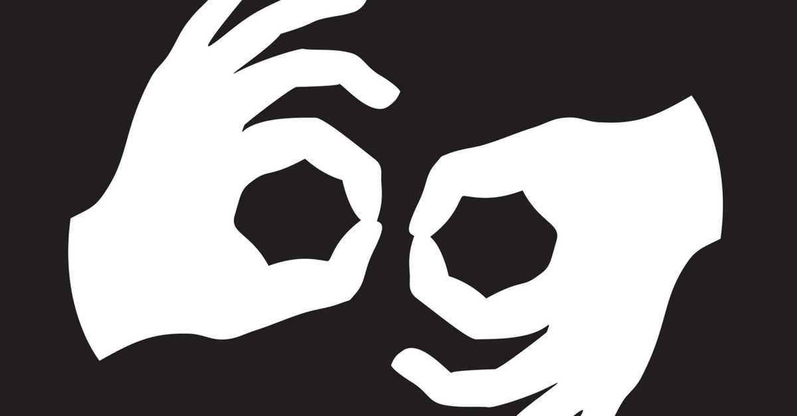

Home
Keywords
Dictionary
Explore
Alphabets and numbers
Types of Signs
Basic Handshapes
Grammar Explanantion
One Handed
Two Handed
(symm)
Two Handed
(asymm)
ONE-HANDED SIGN
-Uses only your dominant hand
TWO-HANDED SYMMETRICAL SIGN
-Uses both your dominant and non-dominant hand where they both move the same way
TWO-HANDED NON-SYMMETRICAL SIGN
-Uses both your dominant and non-dominant hand where the dominant hand moves while the non-dominant hand remains stationary